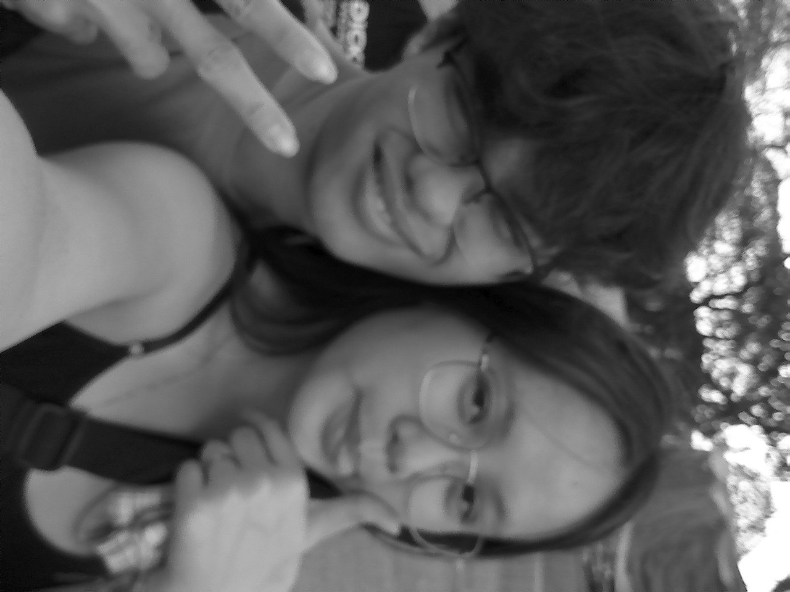
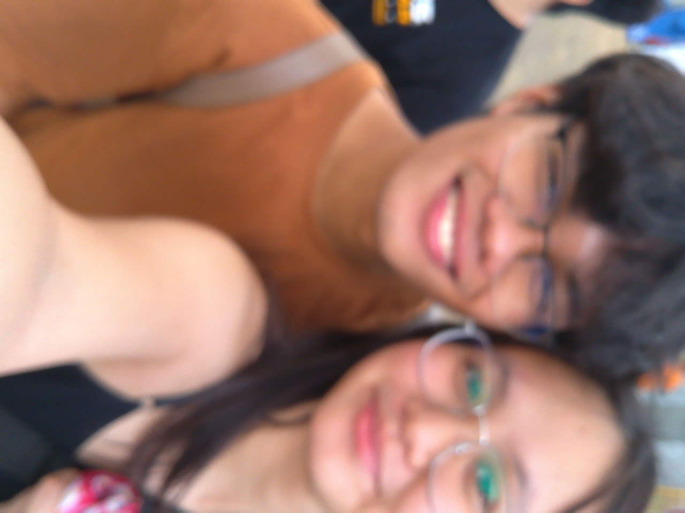
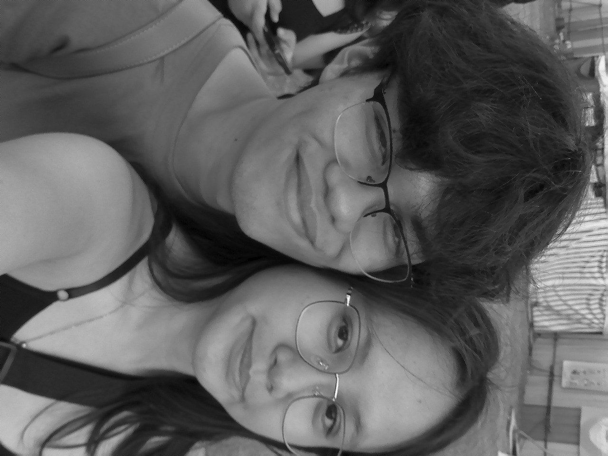
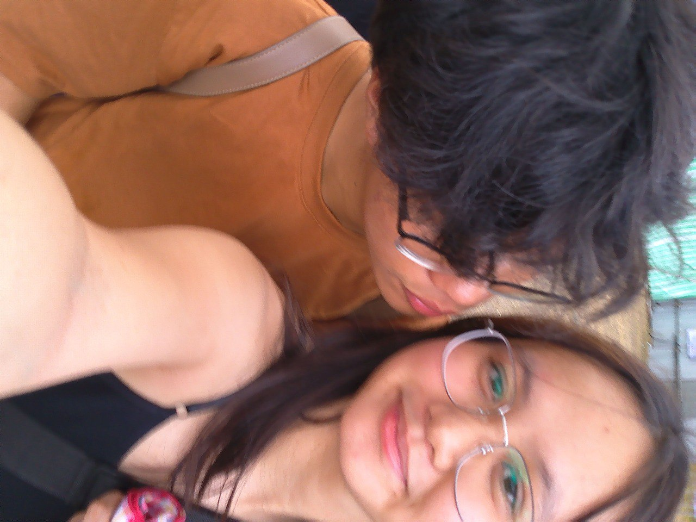
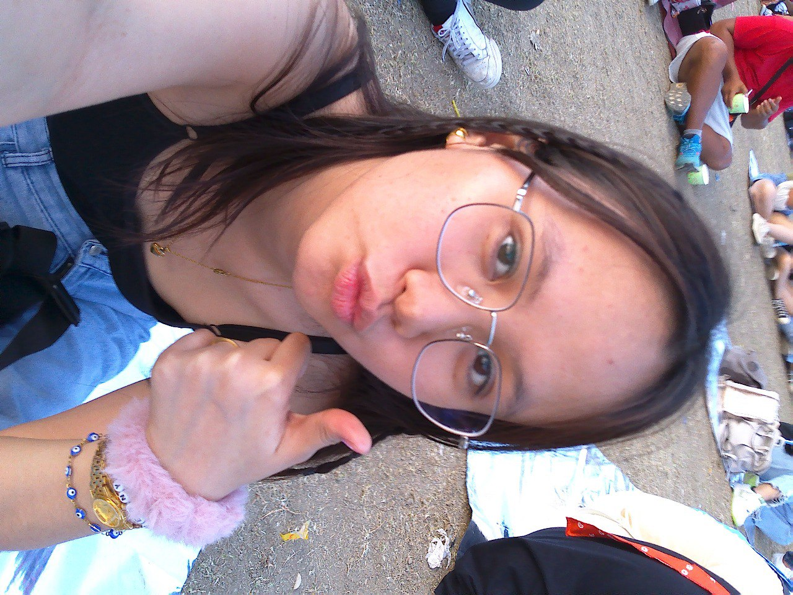

Meet the Founders
We are the DentTech Duo!
Our names are Jesse Mirabel and Oana Gonzaga.




JESSE > Tech Explorer

Jesse is currently pursuing his studies at Polytechnic University of the Philippines. He's deeply passionate about technology, with a knack for coding, web design, and all things IT-related.
During his free time, Jesse enjoys listening to music, honing his coding skills, and engaging in spirited matches of Valorant. He also finds joy in admiring sports cars and watching captivating car edits, indulging in the beauty of automotive craftsmanship. He also likes reading books.
OANA > Smile Architect

Oana is currently pursuing her studies at Centro Escolar University, carving her path in the realm of dentistry. Alongside her academic pursuits, Oana finds delight in the simple pleasures of life. Whether it's the mellifluous melodies of music, the captivating world of cinema and series, or the serene strokes of her sketches, Oana embraces each moment with fervor.
Her warm presence brings light to the room, and her affection for Jesse knows no bounds, as she showers him with adoration, her love for him surpassing even his own.